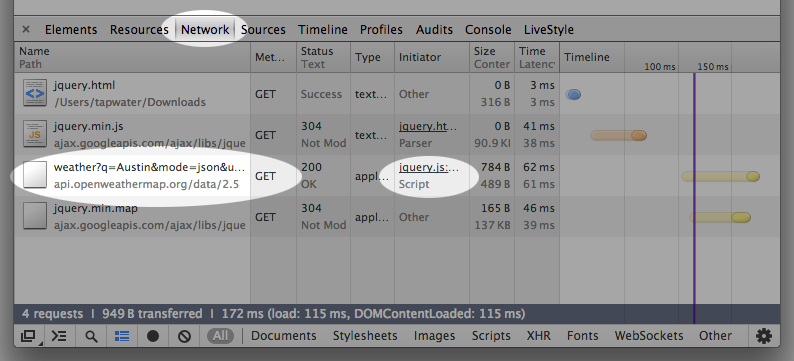

Ajax is a means of interacting with servers behind the scenes using JavaScript without having to reload the page. This allows you to create complex interactive web apps that behave like desktop apps. One famous example is Gmail, which allows you to read, write, and receive emails, all without the need for refreshing the page.
Visit the following URL in your browser: http://api.openweathermap.org/data/2.5/weather?q=San%20Francisco&mode=json&units=imperial
What does the %20 represent in the query string? (hint: try encodeURI("San Francisco") in your JS console, then google it)
Now try the following line of code in your console:
$.ajax({
method: 'GET',
url: 'http://api.openweathermap.org/data/2.5/weather?q=San%20Francisco&mode=json&units=imperial',
success: function(weather_data){
console.log(weather_data)
}
})Open your Network tab and initiate the AJAX request again to see the network request and response in action.
The most common thing to do with data returned from an AJAX request is show it to the user. We can use jQuery to do this, but only in the callback function to_be_run_on_server_response. If we try to use the weather_data outside that function, we won't have the response from the server yet.
var to_be_run_on_server_response = function(weather_data){
$('#container').append(weather_data.main.temp)
}
$.get('http://api.openweathermap.org/data/2.5/weather?q=San%20Francisco&mode=json&units=imperial').success(to_be_run_on_server_response)Exercise: Create a simple weather page that shows the following data.
new Date(weatherData.sys.sunrise * 1000) )Allow the user to click a button or link to show the weather in a different city without reloading the page. You will need to do the following:
event.preventDefault() to prevent the browser from changing pages.#container.Extra Credit:
Now let's try more complex interaction using a RESTful API, which is to say a set of endpoints, available over a network, that serve JSON data in a predictable format based on that resource's name. (e.g. a post with the id of 7 is available at the path /posts/7).
Here the server lives at http://jsonplaceholder.typicode.com and the path to the info we want is /posts/1
$.ajax({
method: 'GET',
url: 'http://jsonplaceholder.typicode.com/posts/1',
success: function(data) {
console.log(data)
}
})Using PlaceHolder JSON
place_post_on_page.place_post_on_page function to display them on the page. Do they always appear in the same order? Why is this?/posts endpoint to get all posts and display only their titles on the page. This is often called the "index" view.$.post()Because we can only send strings of text (or binary data) over a network, not arrays and objects in memory, modern sites convert their data to JSON (JavaScript Object Notation) format, and your jQuery $.ajax() callback converts it back to arrays, objects and primitive values. Check out this example. Here is what is happening for you behind the scenes (try it out in your console with the products array from your e-commerce site):
// run these one line at a time in your console.
// the server does this before sending information over the wire
var products_array_represented_as_json_string = JSON.stringify(products)
typeof products_array_represented_as_json_string
// $.ajax() converts incoming JSON strings back into arrays, objects and primitive values before passing it into your callback function.
JSON.parse(products_array_represented_as_json_string)